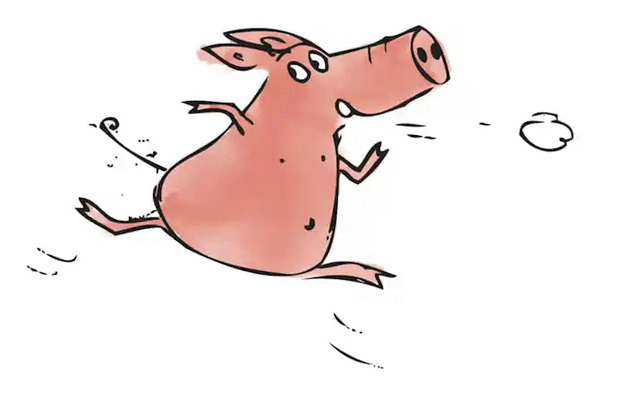
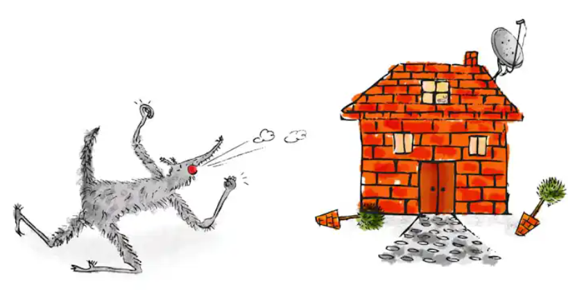

The Bricks
The third little pig worked hard all day and built his house with bricks. It was a sturdy house complete with a fine fireplace and chimney. It looked like it could withstand the strongest winds.

The wolf chased them down the lane and he almost caught them. But they made it to the bricks house and slammed the door closed before the wolf could catch them. The three little pigs they were very frightened, they knew the wolf wanted to eat them. And that was very, very true. The wolf hadn't eaten all day and he had worked up a large appetite chasing the pigs around and now he could smell all three of them inside and he knew that the three little pigs would make a lovely feast.
So the wolf knocked on the door and said:
"Little pigs! Little pigs!
Let me in! Let me in!"
But the little pigs saw the wolf's narrow eyes through the keyhole, so they answered back:
"No! No! No!
Not by the hairs on our chinny chin chin!"
So the wolf showed his teeth and said:
"Then I'll huff
and I'll puff
and I'll blow your house down."
Well! he huffed and he puffed. He puffed and he huffed. And he huffed, huffed, and he puffed, puffed; but he could not blow the house down. At last, he was so out of breath that he couldn't huff and he couldn't puff anymore. So he stopped to rest and thought a bit.